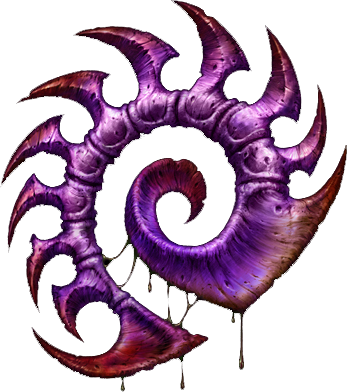

Ahogy minden játéknál megszokhattuk, itt is rendelkezésünkre fognak állni új egységek.
El lehet felejteni a sima "építs bázist meg sereget, aztán irtsd ki az ellenfelet" küldetéseket, nem olyan egyszerű az.
Vigyázat még forró! :)
A Zerg a kíméletlen Zerus hamubolygó világában fejlődött ki. Amikor a Xel'naga flottát elsöpörték az zergek, az egykori halhatatlan faj által létrehozott első vezetőjük, a Legfelsőbb Tudat (Overmind) felfedezte a Protoss fajt, kiknek potenciáiba látta meg a Zerg, mint tökéletes fajjá válásának igazi zálogát. Ugyanakkor a Legfelsőbb Tudat rájött arra is, hogy e faj telepatikus erejével nem szállhat szembe, ha nem találnak egy olyan másik értelmet, aki a pszionikus erők halvány jeleinek birtokába van. A Koprulu szektorba érkező biológiai szondák hamarosan felfedezték a terran világokat, így a Legfelsőbb Tudat titkon invázióba fogott, hogy megszerezze a fiatal faj genetikai ismereteit, ezzel kiegyensúlyozott harcot remélve a protossokkal szembe. A Nagy Háború (Great War) alatt azonban megváltoztak tervei, amint tudomást szerzett a kiszemelt faj szülőbolygójának pontos hollétéről. Végtelen számú falánk harcosát az űr mélyén keresztül az Aiurra vezette és hamar győzelmet aratott felettük. A Protoss azonban nem adta fel a harcot és egy kiemelkedő harcosuk önfeláldozása elpusztította a Legfelsőbb Tudatot. Az epikus küzdelem azonban nem várt következménnyel járt; az addig szolgaságba taszított fertőzött terran nő Sarah Kerrigan visszanyerte önálló akaratát, majd a szétzúzott Zerg fészekaljak egyesítésével és a Második Legfelsőbb Tudat elpusztításával véglegesen átvette a hatalmat az egész Raj felett. A zergek nem használnak semmiféle technológiát, járművet vagy űrhajót, továbbá nem is egységes fajt alkotnak; a meghódított világok bekebelezett ökoszisztémáiban előforduló legerősebbnek ítélt fajainak különféle formáiból áll össze egyetlen egésszé, akik a hiperevolúciós fertőzés következtében könyörtelen gyilkosokká válva vak engedelmességbe követik központi értelmüket. Vadságuk és következetességük folytán állandóan a teljes dominanciára törekednek, fejlődésüket pedig a felfedezett életformák beolvasztásával biztosítják. Egységeiket hatalmas számban képesek megalkotni, épületeik pedig valódi élőlények, akik a Raj fészekaljainak meghatározott szerveikként funkcionálnak.